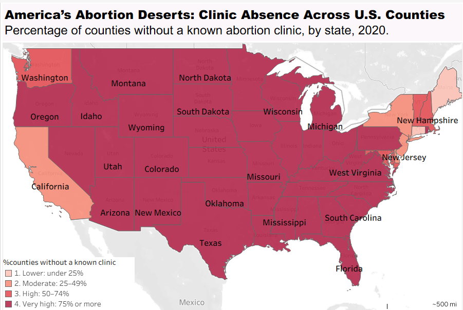
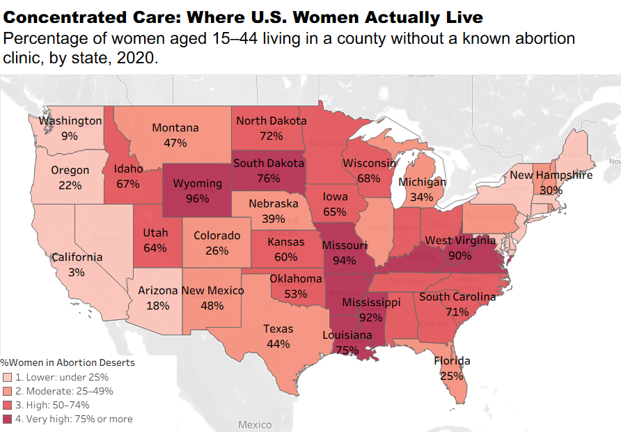

Proposition: Geographic gaps in abortion clinic availability create an important concern about access to abortion care in the United States.
FOR the Proposition

Design Decisions and Rationale:
- RATIONALE_1: • Using a Choropleth map (Score: +1): I chose a map because geographic position helps readers see how clinic absence is distributed across the country. This format makes regional patterns easier to recognize than a long list of state percentages.
- RATIONALE_2: • Grouping percentages into four color categories (Score 0): The viewers could identify broad geographic patterns without having to compare every exact value. This makes the map easier to read and persuades readers that this is a widespread issue rather than a problem limited to a few locations. However, the thresholds are choices I made, not natural divisions in the data, and states close to a boundary may look more different than their actual values suggest.
- RATIONALE_3: • Use a dramatic title and a categorical caption (Score: -1.5): The word deserts frames clinic absence as a form of deprivation before the reader interprets the map.
- RATIONALE_4: • Use counties rather than women as the unit of analysis (Score: -1.5): The percentage of counties without a clinic gives every county/state equal weight, regardless of its population. This is a valid measure of geographic coverage, but it can make the problem look larger than a population-weighted measure would.
- WHAT WORKED AND WHAT I WOULD CHANGE: The map makes the geographic distribution of clinic absence easy to scan, and the darkest shades direct attention toward states with the highest percentages. The title and caption help establish my proposition quickly. However, the map does not show how many women live in these counties, and the four categories hide differences between states within the same group. I could improve the visualization by including exact percentages in tooltips or labels.
AGAINST the Proposition

Design Decisions and Rationale:
- RATIONALE_1: • Use the indicator population of women aged 15-44 (Score: +1.5): Calculate the share of women aged 15-44 living in counties without a known clinic rather than the share of counties without a clinic. This better reflects how the absence of a clinic is distributed across the population. The limitation is that residence in a county without a clinic does not necessarily mean a woman lacks access to nearby care.
- RATIONALE_2: • Use the same four-color categories as the first map (Score: +1.5): I kept the same color palette and percentage thresholds used in the first map. This consistency helps readers compare the two maps without learning a new visual system. It also makes the difference in the displayed pattern attributable to the measure being mapped rather than a change in the color scheme. However, identical colors do not mean identical quantities: the first map measures counties and the second measures women. That distinction should be clearly stated in each legend to avoid implying that the maps measure the same thing.
- RATIONALE_3: • Use a reassuring title and subtitle (Score: -1): The title “Concentrated Care: Where US Women Actually Live” emphasizes the counterargument. The word “actually” implies that the population measure is more representative of reality, which is partly defensible. The callout showing how many states have fewer than 25% of women living in counties without a known clinic draws attention to lower population-based percentages. This creates a contrast with the first map. However, highlighting only the lower values could make the situation appear less serious than it is.
- RATIONALE_4: • Treat county-level clinic absence as a proxy rather than a direct measure of access (Score: -2): The map can show that women in counties with large populations may have a clinic in their county or nearby, while other counties have no clinics. This shows that counting clinics by county alone may make the problem of access seem worse than it is for the overall population. However, without information about travel time, clinic capacity, state laws, and other barriers, the map cannot prove that most women can reach a clinic easily.
- WHAT WORKED AND WHAT I WOULD CHANGE: The second map shows the difference between counties without a known clinic and the women living in those counties. Using the same colors makes the maps easy to compare, and the population data gives a clearer picture of access. However, having a clinic nearby does not always mean care is easy to get. I would add a short note explaining what the map shows and, if space allows, compare state values or add a scatter plot to show the relationship between the two measures.
Final Reflection
Designing those visualizations helped me understand how the same data can tell different stories depending on how it is presented. Choosing the measures and chart types was not the hardest part. The biggest challenge was deciding how to make the visualizations persuasive while still being honest about what the data shows. I learned that small choices, such as titles, colors, percentages, and which information to highlight or leave out, can strongly affect how people understand an issue. I was surprised to see that visualization can use correct numbers but still give readers an incomplete picture.
I now understand that ethical data visualization means more than showing accurate numbers. It also means being clear about what the data measures, explaining important limitations, and avoiding conclusions that the data cannot support. For example, showing the percentage of counties without an abortion clinic can reveal geographic gaps, while showing the percentage of women living in those counties gives a different view of the problem.
Overall, I learned that ethical visualization requires thinking not only about the information shown but also about how people may interpret it. In future projects, I would pay more attention to what information is included or excluded, whether the title matches the data, and what conclusions readers might draw. I do not think every visualization needs to be completely neutral, but I believe it should be transparent and fair. The goal should be to communicate a clear message without hiding important information or leading the audience toward conclusions that the evidence does not fully support.